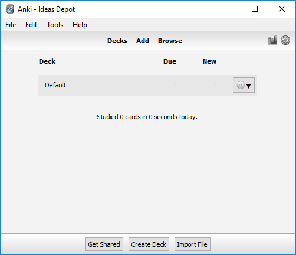
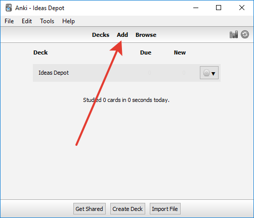
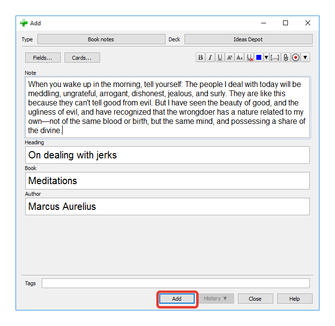
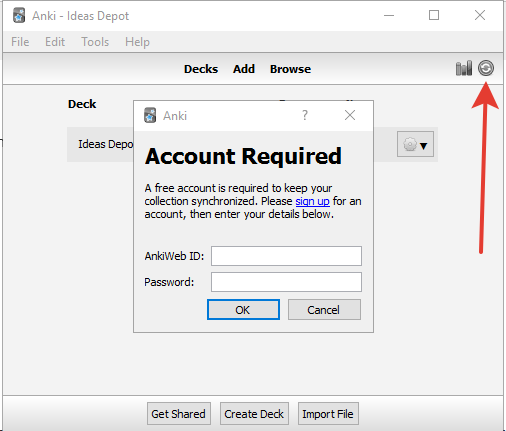
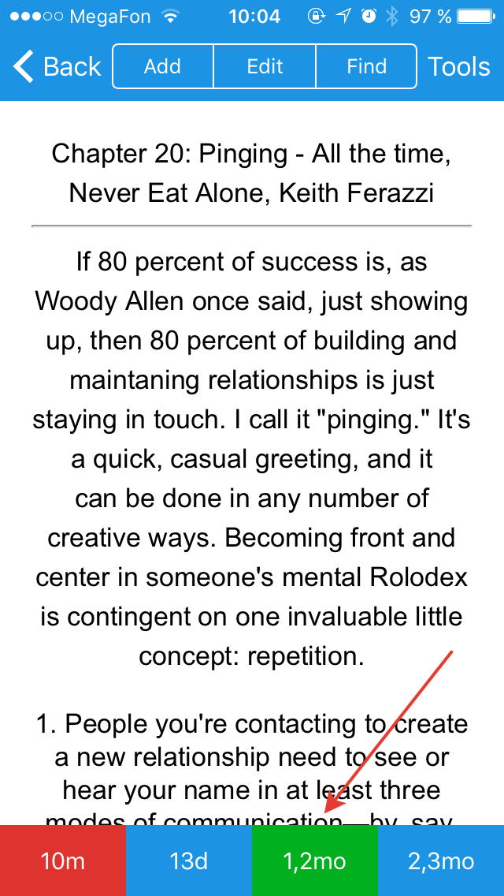

Make personal growth books work for you: the “Ideas Depot” reading strategy
Posted on Wed 23 August 2017 in Productivity

(image via Pixabay.com)
Reading personal growth and leadership books is always rewarding. Forgetting ideas soon without integrating them into your life - not so much. Read on to learn how to finally make books work for you with a simple 5-minute daily routine.
Throughout the last decade, I read several dozens of books on personal growth, relationships, business, psychology, and leadership. But there’s a bit of a problem with all that reading. I hardly could remember the titles, let alone integrate all the worthwhile ideas into my life.
This discrepancy led me to believe I had been doing it all wrong. Or, worse still, that I was just incapable of following strategies outlined in books. My frustration grew on and on until I came up with a simple yet effective reading strategy. After a few months of usage, I’m so excited with the results that I think I must share the technique with you.
Why personal growth books don’t work for you
To understand a reason why it’s so hard to put self-development books into action, think back to the school years. What were the two key components of learning? First, you had not only to listen to a teacher but to write down the concept. Next, you were given dozens if not hundreds of repetitions to make a new idea your second nature. These two principles - reflection and repetition, are cornerstones of any learning system.
In his book, “Visioneering,” Andy Stanley says you have to discuss the vision of the company twenty-one times before people start to hear it. I believe the same method applies to fully comprehending a new idea.

(We forget almost everything in just a day. Via https://www.gwern.net/Spaced%20repetition)
No wonder that even the brightest ideas end up buried under an enormous stream of daily information.
What about those of us who keep notebooks full of inspirational quotes? More often than not, this treasure trove of advice ends up in a chest of drawers, attracting dust instead of your thoughts.
In other words, not only should you take notes, but you need to set up a hassle-free routine to regularly review notes taken. Only by re-reading a profound idea many times you’d be able to incorporate it finally in your lifestyle.
So how can we harness technology to make those quotes keep coming up, reaching the right time and the right mindset? Read on!
Solution - the “Ideas Depot” reading strategy
Here’s the strategy I employ:
- Read or listen to a book
- Having read a few chapters, skim them again and take notes
- Review quotes on a daily basis
Pretty simple, isn’t it? The devil is in the details. Or rather, in technology.
For one, make electronic notes. This is a crucial step in taking notes better. Such a system will enable you to scale as you read more and more. Plus, it’s much faster to copy-paste a quote if you’ve got a PDF version of the book.
Second, use flash cards instead of a regular text file. In a nutshell, they’re cards which have two sides. On the front side, I write a book title, an author and a title of a chapter. On the back side, there’s a quote or a few I’d like to align my life with. Apparently, once you have your Ideas Depot organized into separate cards, it becomes much easier to manage and review them.
Third, the growing number of cards would have made it impossible to study them without spending too much time. To cope with that, use a fantastic flash card application called Anki. It offers a so-called Spaced Repetition System, praised by many as a revolution in learning. Each time you review an idea, it gets scheduled at a more and more distant time, freeing up space for new cards and allowing you only to review what you’re about to forget.

(Spaced repetition makes things stick in your mind. Via http://www.wranx.com/learning/ )
Fourth, don’t choose a specific note to review. Let Anki handle that for you, mixing new quotes with those you could have forgotten. This point is essential because focusing on favorite ideas at the expense of others would radically decrease the efficiency of the strategy.
Finally, do reviews at the right time and on the right device. It’s not very productive to use personal growth quotes for bedtime reading because you simply won’t have time to comprehend them fully and try to put them into action. It’s like books’ authors turning into personal development coaches and having a morning coffee with you, enlightening you with ideas. Therefore, I do two quick, 2-minute sessions for the breakfast and lunch. And, of course, I use my smartphone, not a PC or a laptop. That way, even if I missed my morning review, I’d always be able to catch up on the go.
Ready to try this system out? Luckily, it’s quite easy to set up. Let me guide you through the whole process.
Install and set up Anki flash card application
Start with downloading a version of Anki for your PC or laptop. I’ll be using Windows 10 as an operating system, but the Mac experience is very similar. After the first launch the application looks something like this:

Here we have a single, empty pack of cards called Default deck. It works fine for simple cards, for example, for learning foreign words, but isn’t well suited for our purpose. Let’s create a separate deck for our Ideas Depot.
Next, download this pre-configured template and import it by clicking on “Import File” at the bottom of the Anki window. Alternatively, you can import the file by just double-clicking on it once you’ve downloaded it.
That’s it, let’s add some ideas to the database!
Input ideas on the PC
To add quotes to your Ideas Depot, first, click on the “Add” link in the main Anki window.

In the next window, select “Book notes” in “Type” list, and choose “Ideas Depot” as a “Deck”. Now, fill the fields to your taste and hit “Add”. Note that while you’re adding more notes, the “Book” and “Author” fields remain prefilled. That’s a convenient feature, allowing you to focus on quotes and not punching in the title every single time.

Review ideas on your smartphone
To synchronize the ideas between your computer and smartphone, create a free AnkiWeb account. It’s like a cloud storage for your decks. Sign up for an account first, then enter your email and password in the Synchronization dialog.

Because you’re doing the first sync, it’ll ask you whether you want to upload or download your decks. Choose “Upload to AnkiWeb”.
Now install an app on your smartphone: free version for Android or a paid app for iOS. The latter is pricey, but the developers say it’s the way to keep the PC and web versions free. If you don’t want to shell out money for it, you can use a web-based application as well.
Hit a “Synchronize” button in the installed app and enter you AnkiWeb credentials. You should be seeing your notes now. Review them every day, tapping the green button to mark cards as seen.

Congratulations, you just got one step closer to putting all those brilliant ideas into action!
Make it a habit
Now comes the hard part. You should stick with the process to transform a fad into a useful habit. Here are some self-development tips from my experience:
- Just do that. As the screenshot above tells us, 80% of success in life is just showing up. So don’t miss a single day.
- Choose time wisely. Breakfast and lunch work for me, but you may, for example, do reviews while commuting or aloud at the weekly meeting (kidding).
- Don’t cram. Two review sessions a day are much better than one just because they leave you more room to contemplate the ideas.
- Make notes for every book you’re reading. Remember, without having copied ideas you’re very likely to forget almost everything.
- Add ideas as you read. Once you’ve read or listened to a chapter, make notes. Don’t wait while the entire book is finished.
- Keep notes bite-sized and comprehendible. Break down cards if they’re too big to be read in a minute.
- Regard it as a self-made personal development course. Every time you review an idea, think of ways to translate it into action right now.
Here’s to unstoppable personal growth!
Do you have any ideas or your very own methods of translating books into action? Please share in comments!